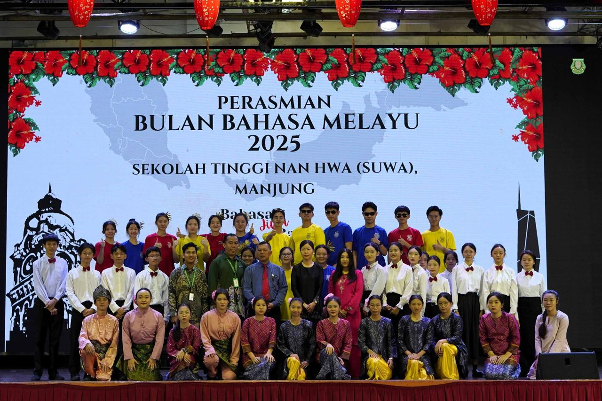
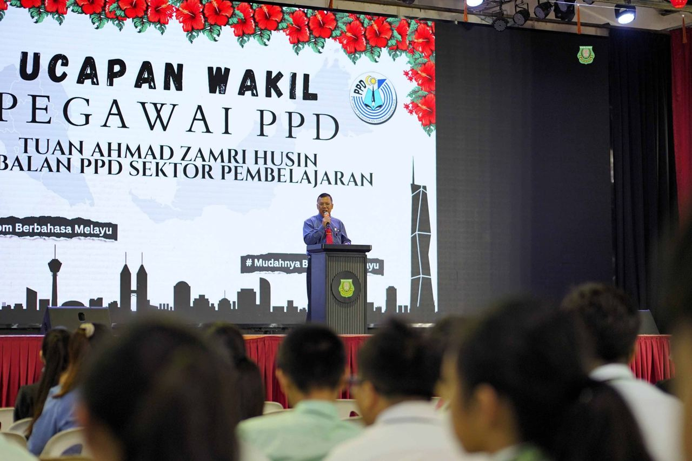
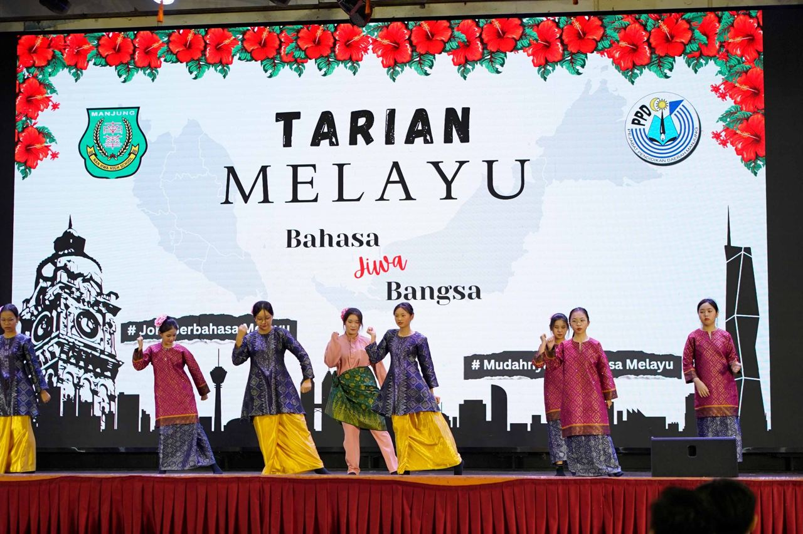
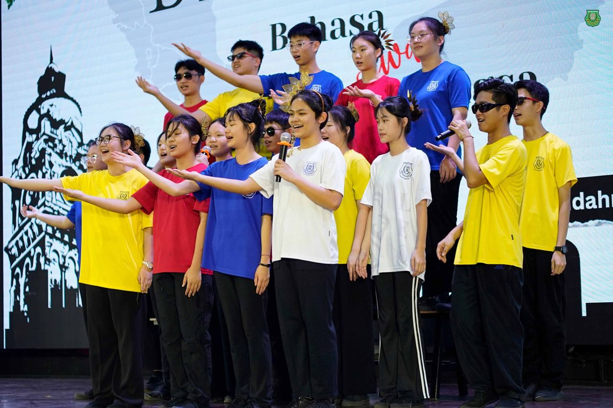
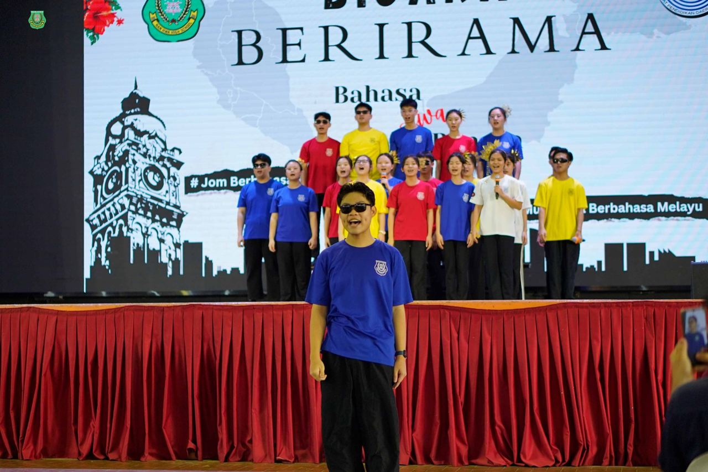
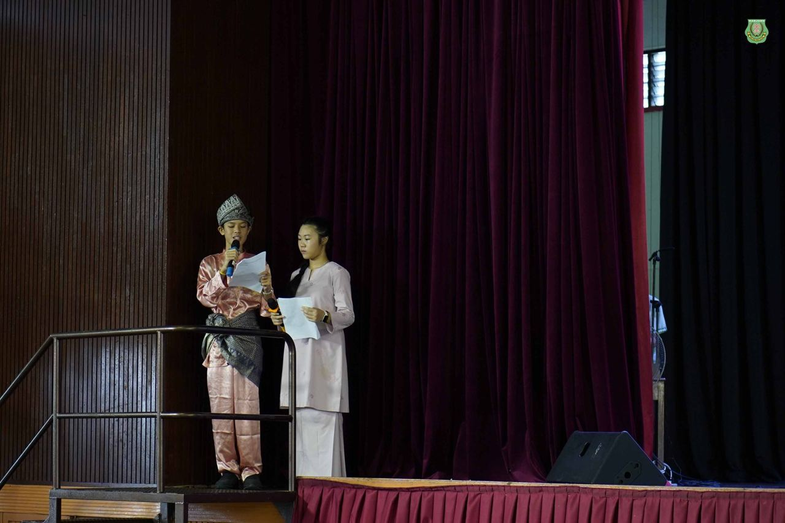
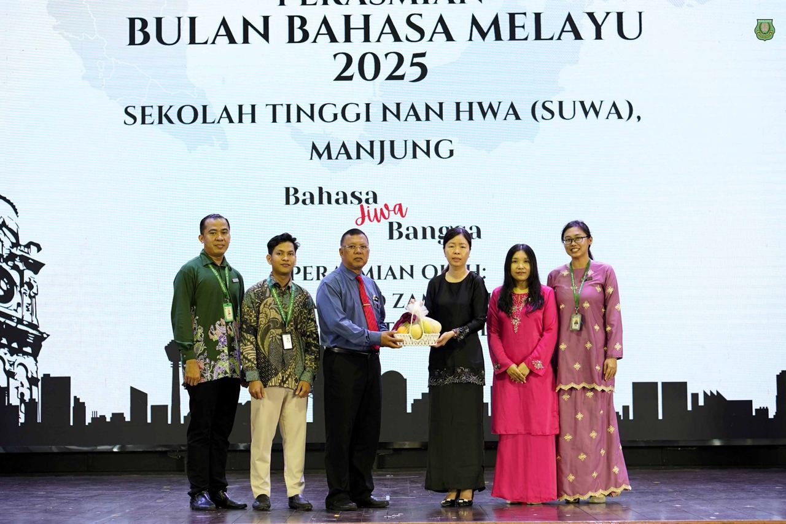

南华独中2025马来语月开幕
南华独中2025马来语月开幕
以“Bahasa Jiwa Bangsa”为主题
推广马来语文化的礼赞
九月的晨风里，南华独中迎来一年一度的“#马来语月”（Bulan Bahasa Melayu 2025），以“Bahasa Jiwa Bangsa”（#语言是民族的灵魂）为主题，展开为期一个月的系列活动。由马来文组全体老师精心筹划，本届马来语月不仅是一场语言的盛会，更是一份文化的礼赞。
开幕礼于9月8日早上在该校礼堂隆重举行，特邀曼绒县教育局学习组副局长——Tuan Ahmad Zamri Husin亲临主持。
在致辞中，Zamri 副局长表示，非常荣幸受邀见证南华独中推广国语的努力。他指出，马来语作为马来西亚的国语，承载着凝聚族群、促进沟通的重要使命。透过一系列活动，学生们不仅能提升语言熟练度，更能在使用中加深民族认同感，促进不同族群之间的理解与交流。他也勉励学生们在日常生活中“多看、多写、多说”马来语，让语言真正成为生活的一部分。
开幕典礼的艺术表演为现场注入浓浓文化气息。首先登场的是节奏轻快、舞姿婀娜的马来传统舞蹈《Zapin Bahari》，掀开序幕。随后，学生们以铿锵有力的《Bicara Berirama：Bahasa Jiwa Bangsa》朗诵并演绎语言与民族的深切关联。最后，全体合唱团献上嘹亮动人的《Sejahtera Malaysia》，歌声在礼堂中久久回荡。
别开生面的开幕“Gimik”融合了传统乐曲与人工智能元素，象征着传统与现代的交融，也寓意马来语将在数字时代继续焕发新的生命力。
整个九月期间，南华师生都将被鼓励以马来语沟通，在日常学习与互动中更贴近这份语言之美。校方希望通过这样的氛围营造，让马来语真正成为师生之间的共同语言，也让学生们在实践中体会到“Bahasa Jiwa Bangsa”的深意。






